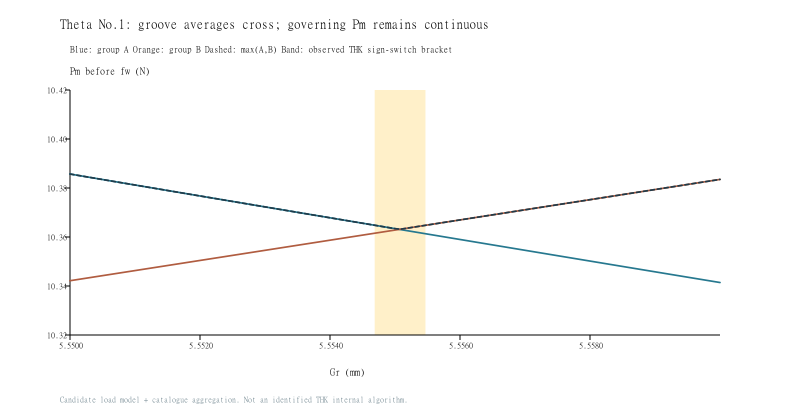

수정 계산 페이지 · 전개식과 전체 비교표 · JSON (공개 미포함)
Pm 차이의 계산상 원인: 하나의 표시 PR을 모든 방향 채널에 재사용하면서, 롤 모멘트가 반대 레이스웨이에 만드는 다른 레이디얼 성분을 누락했다. 각 홈의 PR을 재구성한 뒤 같은 홈의 PE를 거리별로 평균해야 한다. 부호 조회표와 Gr 경계값으로 계산을 분기할 필요가 없다.
71조건142블록에서 Pm 최대차 0.088161 N, ±0.15 N 초과0블록. 전체 안전율 표시 64/64 일치. 이 결과는 기존 후보 계수와 카탈로그 집계의 재현 대조이며 전체 선정식의 공식성·설계 적용성을 보증하지 않는다. 수명0.5% 초과 24블록은 보존한다.
공식 집계와 후보 하중 모델을 분리했다. kP의 BS별 값과 Gr 원점5.7 mm는 아직 경험적 근거다. THK의 표시 PR 부호와 우리의 홈별 투영 PR은 동일 정의로 단정하지 않는다. 전체 안전율과 별도로 구형 가속 H2는 미해명이다. ST30 mm는 블록 길이31 mm의2배 이하이므로 THK의 단거리 적용 주의에도 해당한다.
| 계층 | 식 / 상태 |
|---|---|
| THK HSR 등가하중 | PE=X·P_R(L)+Y·P_T, HSR X=Y=1. 크기와 해당 홈이 받을 수 있는 방향을 먼저 구분. |
| THK 평균·수명 | Pm_j=(Σ PE_jn³·s_n / Σs_n)^(1/3), 지배 홈=max_j Pm_j. L=50·[fH fT fC C50/(fw Pm)]³. fw는1회만 적용. |
| 모멘트 | P=K·M; N·m→N·mm 변환. 단일/밀착2블록 계수를 임의 BS에 대입하지 않음. |
| NSK NH/NS | Fse=|Fs|tan50°, Fre/p/y=εr/p/y·|Mr/p/y| (ε:1/m, M:N·m). Fe=0.5·[ΣF+max(F)]. Table11 방향별 정격이 다르며 THK HSR과 교환 불가. L=100(C100/fwF)³=50(C50/fwF)³. |
| 볼스크류 개요 | 평균은 회전수 가중(정리드에서는 거리 비례), L10=10⁶[Ca/(fwFm)]³ rev. THK는 양/음 방향을 전체 운전거리 분모로 각각 평균 후 큰 값 선택. 예압·좌굴·위험속도는 별도 선정 항목; 이번 LM 모듈에 혼입하지 않음. |
W=mg, a=V/(1000tn), s=(Vtn/2, ST−Vtn, Vtn/2)
D / −D = ±kP·m·a·(Br+Gr) (No.1 / No.2)
R = .235·W·(Gr−5.7)/2
PT₁ = −W/2 − kP[W(BS/2−Ga) − ma(Bt−Gt)], PT₂=−W−PT₁
각 홈 q=(sr,st), sr,st∈{−1,+1}:
PR_q = D + st·R
PE_q = max(sr·PR_q,0) + max(st·PT,0)
Pm_q = [Σ PE_q³·s / ST]^(1/3), Pm=max_q(Pm_q)
카탈로그 집계: PE_q→Pm_q→L. 후보 계층: D, R, PT를 만드는 좌표계·kP·원점.
과거 오류: PR_q 대신 한 표시 PR을 모든 q에 재사용.
THK 공개 예제는 홈별 방향 성분을0으로 처리하는 순서를 설명한다. 이 규칙 자체를 전부 경험식이라고 했던 설명도 정정한다. 다만 위 Theta의 네 홈에 대한 모멘트 분해는 후보이며, 카탈로그가 위 형상 응답식 전체를 그대로 제시한 것은 아니다.
BS=Ga=100, m15 kg, Br24/Bt3.5/Gt0, V80, tn.008, ST30. W=147.09975 N, D=(44.325,0,−44.325) N, R=−2.592633094 N, PT=(5.25,0,−5.25) N. 선택 홈 하나의 PE=(5.250000000, 2.592633094, 46.917633094) N. 거리=(.32,29.36,.32) mm.
이전 Pm=11.526531505 N, fw·Pm=13.831837806 N → 수정 Pm=10.385704980 N, fw·Pm=12.462845976 N. 공식 PDF의 fw 포함 Pm=12.5 N. fw 누락이나 거리·3승 평균의 오류가 아니라 홈별 PR 입력 재구성 오류였다.
기존 관측구간5.5546875~5.55546875 mm 안에서, 두 후보 홈의 평균하중이 같아지는 계산점은 약5.555067415 mm다. 이 점은 PDF 전환값으로 역산한 상수가 아니라 두 Pm곡선의 교점이다. 따라서 표시 PR의 급변이 물리적 힘의 불연속을 뜻한다고 볼 수 없다. 대칭 홈들이 동일 Pm을 가질 수 있어 툴의 홈 번호·표시 부호 선택까지 확정하지는 않는다.

| 조건·PDF | 블록 | 기존 Pm N | 수정 Pm N | PDF 정규화 Pm N | 수정 Δ N | 수명 Δ % | 전체 fs/THK |
|---|---|---|---|---|---|---|---|
| Theta · 기준 조건 (공개 미포함) | 1 | 322.724313 | 322.724313 | 322.800000 | -0.075687 | 0.0287 | 6.1/구형 별도 |
| Theta · 기준 조건 (공개 미포함) | 2 | 180.588479 | 180.588479 | 180.600000 | -0.011521 | 0.0178 | 6.1/구형 별도 |
| Theta · 가속도 5 (공개 미포함) | 1 | 319.607343 | 319.607343 | 319.600000 | 0.007343 | 0.0503 | 8.1/구형 별도 |
| Theta · 가속도 5 (공개 미포함) | 2 | 174.996252 | 174.996252 | 175.000000 | -0.003748 | 0.1341 | 8.1/구형 별도 |
| Theta · 가속도 2 (공개 미포함) | 1 | 317.671196 | 317.671196 | 317.700000 | -0.028804 | 0.0901 | 10.1/구형 별도 |
| Theta · 가속도 2 (공개 미포함) | 2 | 171.634574 | 171.634574 | 171.700000 | -0.065426 | 0.0224 | 10.1/구형 별도 |
| Theta · Br = 13 (공개 미포함) | 1 | 319.839235 | 319.839235 | 319.900000 | -0.060765 | 0.1331 | 7/구형 별도 |
| Theta · Br = 13 (공개 미포함) | 2 | 175.343488 | 175.343488 | 175.400000 | -0.056512 | 0.0332 | 7/구형 별도 |
| Theta · Bt = 0 (공개 미포함) | 1 | 321.807495 | 321.807495 | 321.800000 | 0.007495 | 0.1135 | 6.4/구형 별도 |
| Theta · Bt = 0 (공개 미포함) | 2 | 178.743796 | 178.743796 | 178.800000 | -0.056204 | 0.1328 | 6.4/구형 별도 |
| Theta · Br = −24 (공개 미포함) | 1 | 316.636538 | 316.636538 | 316.700000 | -0.063462 | 0.0431 | 10.2/구형 별도 |
| Theta · Br = −24 (공개 미포함) | 2 | 169.722869 | 169.722869 | 169.700000 | 0.022869 | 0.1413 | 10.2/구형 별도 |
| Theta · Bt = −3.5 (공개 미포함) | 1 | 320.998445 | 320.998445 | 321.000000 | -0.001555 | 0.1059 | 6.7/구형 별도 |
| Theta · Bt = −3.5 (공개 미포함) | 2 | 177.092681 | 177.092681 | 177.100000 | -0.007319 | 0.0706 | 6.7/구형 별도 |
| Theta · 질량 30 kg (공개 미포함) | 1 | 645.448626 | 645.448626 | 645.416667 | 0.031959 | 0.0287 | 3/3 |
| Theta · 질량 30 kg (공개 미포함) | 2 | 361.176957 | 361.176957 | 361.166667 | 0.010291 | 0.0904 | 3/3 |
| Theta · 질량 7.5 kg (공개 미포함) | 1 | 161.362156 | 161.362156 | 161.416667 | -0.054510 | 0.1059 | 12.2/12.2 |
| Theta · 질량 7.5 kg (공개 미포함) | 2 | 90.294239 | 90.294239 | 90.333333 | -0.039094 | 0.0178 | 12.2/12.2 |
| Theta · Gr = 0 (공개 미포함) | 1 | 290.842835 | 290.842835 | 290.833333 | 0.009502 | 0.0636 | 8.6/8.6 |
| Theta · Gr = 0 (공개 미포함) | 2 | 145.226460 | 145.226460 | 145.250000 | -0.023540 | 0.0432 | 8.6/8.6 |
| Theta · Gr = −13 (공개 미포함) | 1 | 513.594213 | 513.594213 | 513.583333 | 0.010880 | 0.5111 | 6.7/6.7 |
| Theta · Gr = −13 (공개 미포함) | 2 | 366.547631 | 366.547631 | 366.583333 | -0.035702 | 0.0878 | 6.7/6.7 |
| Theta · Ga = +10 (공개 미포함) | 1 | 250.539329 | 250.539329 | 250.583333 | -0.044004 | 0.3894 | 6.9/6.9 |
| Theta · Ga = +10 (공개 미포함) | 2 | 169.041761 | 169.041761 | 169.083333 | -0.041572 | 0.2305 | 6.9/6.9 |
| Theta · Ga = −10 (공개 미포함) | 1 | 395.592680 | 395.592680 | 395.583333 | 0.009347 | 0.2634 | 5.4/5.4 |
| Theta · Ga = −10 (공개 미포함) | 2 | 251.138464 | 251.138464 | 251.166667 | -0.028202 | 0.4001 | 5.4/5.4 |
| Theta · Gt = +5 (공개 미포함) | 1 | 321.447463 | 321.447463 | 321.500000 | -0.052537 | 0.0091 | 6.5/6.5 |
| Theta · Gt = +5 (공개 미포함) | 2 | 178.011795 | 178.011795 | 178.000000 | 0.011795 | 0.0601 | 6.5/6.5 |
| Theta · Gt = −5 (공개 미포함) | 1 | 324.217314 | 324.217314 | 324.250000 | -0.032686 | 0.0426 | 5.7/5.7 |
| Theta · Gt = −5 (공개 미포함) | 2 | 183.536766 | 183.536766 | 183.583333 | -0.046568 | 0.1112 | 5.7/5.7 |
| Theta · Ga = +5 (공개 미포함) | 1 | 286.510076 | 286.510076 | 286.500000 | 0.010076 | 0.0377 | 6.5/6.5 |
| Theta · Ga = +5 (공개 미포함) | 2 | 146.802934 | 146.802934 | 146.833333 | -0.030399 | 0.0926 | 6.5/6.5 |
| Theta · Ga = +6 (공개 미포함) | 1 | 279.293075 | 279.293075 | 279.333333 | -0.040258 | 0.0032 | 6.6/6.6 |
| Theta · Ga = +6 (공개 미포함) | 2 | 142.327458 | 142.327458 | 142.333333 | -0.005875 | 0.0879 | 6.6/6.6 |
| Theta · 복합 A · Ga=5 (공개 미포함) | 1 | 321.551096 | 321.551096 | 321.583333 | -0.032237 | 0.0468 | 8.4/8.4 |
| Theta · 복합 A · Ga=5 (공개 미포함) | 2 | 204.676420 | 204.676420 | 204.666667 | 0.009753 | 0.0362 | 8.4/8.4 |
| Theta · 복합 A · Ga=6 (공개 미포함) | 1 | 315.664133 | 315.664133 | 315.666667 | -0.002534 | 0.0951 | 8.5/8.5 |
| Theta · 복합 A · Ga=6 (공개 미포함) | 2 | 200.684056 | 200.684056 | 200.750000 | -0.065944 | 0.2083 | 8.5/8.5 |
| Theta · 복합 B · Ga=5 (공개 미포함) | 1 | 522.737484 | 522.737484 | 522.750000 | -0.012516 | 0.3460 | 5.4/5.4 |
| Theta · 복합 B · Ga=5 (공개 미포함) | 2 | 308.042109 | 308.042109 | 308.083333 | -0.041224 | 0.0479 | 5.4/5.4 |
| Theta · 복합 B · Ga=6 (공개 미포함) | 1 | 511.931770 | 511.931770 | 512.000000 | -0.068230 | 0.2405 | 5.5/5.5 |
| Theta · 복합 B · Ga=6 (공개 미포함) | 2 | 300.711050 | 300.711050 | 300.750000 | -0.038950 | 0.1512 | 5.5/5.5 |
| Theta · 복합 C · Ga=25 (공개 미포함) | 1 | 31.658728 | 31.658728 | 31.666667 | -0.007939 | 0.0898 | 20.5/20.5 |
| Theta · 복합 C · Ga=25 (공개 미포함) | 2 | 109.906608 | 109.906608 | 109.916667 | -0.010059 | 0.0643 | 20.5/20.5 |
| Theta · 복합 C · Ga=26 (공개 미포함) | 1 | 29.771346 | 29.771346 | 29.833333 | -0.061987 | 0.0417 | 20.1/20.1 |
| Theta · 복합 C · Ga=26 (공개 미포함) | 2 | 114.295636 | 114.295636 | 114.333333 | -0.037697 | 0.6323 | 20.1/20.1 |
| Theta · BS = 40 (공개 미포함) | 1 | 287.480566 | 287.480566 | 287.500000 | -0.019434 | 0.0001 | 8.2/8.2 |
| Theta · BS = 40 (공개 미포함) | 2 | 142.657894 | 142.657894 | 142.666667 | -0.008772 | 0.0566 | 8.2/8.2 |
| Theta · BS = 60 (공개 미포함) | 1 | 274.119019 | 274.119019 | 274.166667 | -0.047648 | 0.7367 | 10.1/10.1 |
| Theta · BS = 60 (공개 미포함) | 2 | 127.936870 | 127.936870 | 128.000000 | -0.063130 | 0.0401 | 10.1/10.1 |
| Theta · BS = 100 (공개 미포함) | 1 | 273.562363 | 273.562363 | 273.583333 | -0.020970 | 0.3967 | 11.4/11.4 |
| Theta · BS = 100 (공개 미포함) | 2 | 126.811877 | 126.811877 | 126.833333 | -0.021456 | 0.7880 | 11.4/11.4 |
| Theta · BS=40 · Ga=2 (공개 미포함) | 1 | 279.007415 | 279.007415 | 279.000000 | 0.007415 | 0.3107 | 8.4/8.4 |
| Theta · BS=40 · Ga=2 (공개 미포함) | 2 | 134.415461 | 134.415461 | 134.416667 | -0.001206 | 0.0125 | 8.4/8.4 |
| Theta · BS=40 · Ga=3 (공개 미포함) | 1 | 274.772405 | 274.772405 | 274.750000 | 0.022405 | 0.0198 | 8.5/8.5 |
| Theta · BS=40 · Ga=3 (공개 미포함) | 2 | 132.192838 | 132.192838 | 132.250000 | -0.057162 | 0.1198 | 8.5/8.5 |
| Theta · BS=40 · Ga=37 (공개 미포함) | 1 | 132.192838 | 132.192838 | 132.250000 | -0.057162 | 0.1198 | 8.5/8.5 |
| Theta · BS=40 · Ga=37 (공개 미포함) | 2 | 274.772405 | 274.772405 | 274.750000 | 0.022405 | 0.0198 | 8.5/8.5 |
| Theta · BS=40 · Ga=38 (공개 미포함) | 1 | 134.415461 | 134.415461 | 134.416667 | -0.001206 | 0.0125 | 8.4/8.4 |
| Theta · BS=40 · Ga=38 (공개 미포함) | 2 | 279.007415 | 279.007415 | 279.000000 | 0.007415 | 0.3107 | 8.4/8.4 |
| Theta · BS=60 · Ga=-1 (공개 미포함) | 1 | 276.565138 | 276.565138 | 276.583333 | -0.018196 | 0.9722 | 10.1/10.1 |
| Theta · BS=60 · Ga=-1 (공개 미포함) | 2 | 130.357036 | 130.357036 | 130.416667 | -0.059631 | 0.0547 | 10.1/10.1 |
| Theta · BS=60 · Ga=1 (공개 미포함) | 1 | 271.673027 | 271.673027 | 271.750000 | -0.076973 | 0.6077 | 10.2/10.2 |
| Theta · BS=60 · Ga=1 (공개 미포함) | 2 | 130.266962 | 130.266962 | 130.333333 | -0.066371 | 0.0588 | 10.2/10.2 |
| Theta · BS=100 · Ga=-1 (공개 미포함) | 1 | 275.031823 | 275.031823 | 275.083333 | -0.051510 | 0.6960 | 11.3/11.3 |
| Theta · BS=100 · Ga=-1 (공개 미포함) | 2 | 128.271247 | 128.271247 | 128.333333 | -0.062086 | 0.2234 | 11.3/11.3 |
| Theta · BS=100 · Ga=1 (공개 미포함) | 1 | 272.092920 | 272.092920 | 272.166667 | -0.073747 | 0.1426 | 11.4/11.4 |
| Theta · BS=100 · Ga=1 (공개 미포함) | 2 | 128.271247 | 128.271247 | 128.333333 | -0.062086 | 0.2234 | 11.4/11.4 |
| Theta · BS60 · Ga=59.98 (공개 미포함) | 1 | 127.895228 | 127.895228 | 127.916667 | -0.021439 | 0.1378 | 10.1/10.1 |
| Theta · BS60 · Ga=59.98 (공개 미포함) | 2 | 274.070098 | 274.070098 | 274.083333 | -0.013236 | 0.7906 | 10.1/10.1 |
| Theta · BS60 · Ga=59.99 (공개 미포함) | 1 | 127.912673 | 127.912673 | 127.916667 | -0.003993 | 0.0969 | 10.1/10.1 |
| Theta · BS60 · Ga=59.99 (공개 미포함) | 2 | 274.094558 | 274.094558 | 274.166667 | -0.072108 | 0.7637 | 10.1/10.1 |
| Theta · BS60 · Ga=59.9832 (공개 미포함) | 1 | 127.896220 | 127.896220 | 127.916667 | -0.020447 | 0.1355 | 10.1/10.1 |
| Theta · BS60 · Ga=59.9832 (공개 미포함) | 2 | 274.077925 | 274.077925 | 274.083333 | -0.005408 | 0.7820 | 10.1/10.1 |
| Theta · BS60 · Ga=59.9833 (공개 미포함) | 1 | 127.896462 | 127.896462 | 127.916667 | -0.020205 | 0.1349 | 10.1/10.1 |
| Theta · BS60 · Ga=59.9833 (공개 미포함) | 2 | 274.078170 | 274.078170 | 274.083333 | -0.005164 | 0.7817 | 10.1/10.1 |
| Theta · BS60 · Ga=59.981 (공개 미포함) | 1 | 127.892808 | 127.892808 | 127.916667 | -0.023858 | 0.1435 | 10.1/10.1 |
| Theta · BS60 · Ga=59.981 (공개 미포함) | 2 | 274.072544 | 274.072544 | 274.083333 | -0.010789 | 0.7879 | 10.1/10.1 |
| Theta · BS60 · Ga=59.982 (공개 미포함) | 1 | 127.893316 | 127.893316 | 127.916667 | -0.023350 | 0.1423 | 10.1/10.1 |
| Theta · BS60 · Ga=59.982 (공개 미포함) | 2 | 274.074990 | 274.074990 | 274.083333 | -0.008343 | 0.7852 | 10.1/10.1 |
| Theta · BS60 · 기존 식의 영점 후보 (공개 미포함) | 1 | 127.896243 | 127.896243 | 127.916667 | -0.020424 | 0.1354 | 10.1/10.1 |
| Theta · BS60 · 기존 식의 영점 후보 (공개 미포함) | 2 | 274.077948 | 274.077948 | 274.083333 | -0.005385 | 0.7820 | 10.1/10.1 |
| Theta · BS100 · Ga=99.99 (공개 미포함) | 1 | 126.826470 | 126.826470 | 126.833333 | -0.006863 | 0.7532 | 11.4/11.4 |
| Theta · BS100 · Ga=99.99 (공개 미포함) | 2 | 273.547669 | 273.547669 | 273.583333 | -0.035665 | 0.4129 | 11.4/11.4 |
| Theta · BS100 · Ga=100 (공개 미포함) | 1 | 126.811877 | 126.811877 | 126.833333 | -0.021456 | 0.7880 | 11.4/11.4 |
| Theta · BS100 · Ga=100 (공개 미포함) | 2 | 273.562363 | 273.562363 | 273.583333 | -0.020970 | 0.3967 | 11.4/11.4 |
| Theta · BS100 · Ga=100.01 (공개 미포함) | 1 | 126.826470 | 126.826470 | 126.833333 | -0.006863 | 0.7532 | 11.4/11.4 |
| Theta · BS100 · Ga=100.01 (공개 미포함) | 2 | 273.577058 | 273.577058 | 273.583333 | -0.006276 | 0.3806 | 11.4/11.4 |
| Theta · BS100 · Ga=100 · m30 (공개 미포함) | 1 | 253.623754 | 253.623754 | 253.666667 | -0.042912 | 0.4091 | 5.7/5.7 |
| Theta · BS100 · Ga=100 · m30 (공개 미포함) | 2 | 547.124726 | 547.124726 | 547.166667 | -0.041940 | 0.0193 | 5.7/5.7 |
| Theta · BS100 · Ga=100 · Gr0 (공개 미포함) | 1 | 98.907694 | 98.824249 | 98.833333 | -0.009084 | 0.3278 | 13.8/13.8 |
| Theta · BS100 · Ga=100 · Gr0 (공개 미포함) | 2 | 245.701907 | 245.701907 | 245.750000 | -0.048093 | 0.6042 | 13.8/13.8 |
| Theta · BS60 · Ga59.9815 (공개 미포함) | 1 | 127.892107 | 127.892107 | 127.916667 | -0.024560 | 0.1451 | 10.1/10.1 |
| Theta · BS60 · Ga59.9815 (공개 미포함) | 2 | 274.073767 | 274.073767 | 274.083333 | -0.009566 | 0.7866 | 10.1/10.1 |
| Theta · BS60 · Ga59.98125 (공개 미포함) | 1 | 127.892203 | 127.892203 | 127.916667 | -0.024463 | 0.1449 | 10.1/10.1 |
| Theta · BS60 · Ga59.98125 (공개 미포함) | 2 | 274.073155 | 274.073155 | 274.083333 | -0.010178 | 0.7873 | 10.1/10.1 |
| Theta · BS60 · Ga59.981375 (공개 미포함) | 1 | 127.891901 | 127.891901 | 127.916667 | -0.024766 | 0.1456 | 10.1/10.1 |
| Theta · BS60 · Ga59.981375 (공개 미포함) | 2 | 274.073461 | 274.073461 | 274.083333 | -0.009872 | 0.7869 | 10.1/10.1 |
| Theta · BS60 · Ga59.9814375 (공개 미포함) | 1 | 127.891955 | 127.891955 | 127.916667 | -0.024711 | 0.1455 | 10.1/10.1 |
| Theta · BS60 · Ga59.9814375 (공개 미포함) | 2 | 274.073614 | 274.073614 | 274.083333 | -0.009719 | 0.7868 | 10.1/10.1 |
| Theta · BS60 · Ga59.9814 (공개 미포함) | 1 | 127.891865 | 127.891865 | 127.916667 | -0.024802 | 0.1457 | 10.1/10.1 |
| Theta · BS60 · Ga59.9814 (공개 미포함) | 2 | 274.073522 | 274.073522 | 274.083333 | -0.009811 | 0.7869 | 10.1/10.1 |
| Theta · BS60 · Ga59.98139 (공개 미포함) | 1 | 127.891865 | 127.891865 | 127.916667 | -0.024802 | 0.1457 | 10.1/10.1 |
| Theta · BS60 · Ga59.98139 (공개 미포함) | 2 | 274.073498 | 274.073498 | 274.083333 | -0.009836 | 0.7869 | 10.1/10.1 |
| Theta · BS100 · Ga100 · Gr−13 (공개 미포함) | 1 | 323.295699 | 323.284177 | 323.333333 | -0.049157 | 0.1279 | 7.9/7.9 |
| Theta · BS100 · Ga100 · Gr−13 (공개 미포함) | 2 | 470.320416 | 470.320416 | 470.333333 | -0.012917 | 0.1998 | 7.9/7.9 |
| Theta · BS100 · Ga100 · Gr5.69 (공개 미포함) | 1 | 10.997158 | 10.921049 | 10.916667 | 0.004382 | 0.1578 | 19.4/19.4 |
| Theta · BS100 · Ga100 · Gr5.69 (공개 미포함) | 2 | 147.866993 | 147.866993 | 147.916667 | -0.049674 | 0.1303 | 19.4/19.4 |
| Theta · BS100 · Ga100 · Gr5.7 (공개 미포함) | 1 | 10.962398 | 10.962398 | 11.000000 | -0.037602 | 0.2291 | 19.4/19.4 |
| Theta · BS100 · Ga100 · Gr5.7 (공개 미포함) | 2 | 147.773960 | 147.773960 | 147.833333 | -0.059374 | 0.0223 | 19.4/19.4 |
| Theta · BS100 · Ga100 · Gr5.71 (공개 미포함) | 1 | 11.003762 | 11.003762 | 11.000000 | 0.003762 | 0.3190 | 19.3/19.3 |
| Theta · BS100 · Ga100 · Gr5.71 (공개 미포함) | 2 | 147.945134 | 147.945134 | 148.000000 | -0.054866 | 0.1205 | 19.3/19.3 |
| Theta · BS100 · Ga100 · Gr26 (공개 미포함) | 1 | 351.294691 | 351.294691 | 351.333333 | -0.038642 | 0.1097 | 6.6/6.6 |
| Theta · BS100 · Ga100 · Gr26 (공개 미포함) | 2 | 498.245172 | 498.245172 | 498.333333 | -0.088161 | 0.0812 | 6.6/6.6 |
| Theta · BS100 Ga100 Gr1 (공개 미포함) | 1 | 81.727157 | 81.621556 | 81.666667 | -0.045111 | 0.1659 | 14.6/14.6 |
| Theta · BS100 Ga100 Gr1 (공개 미포함) | 2 | 228.432718 | 228.432718 | 228.500000 | -0.067282 | 0.4265 | 14.6/14.6 |
| Theta · BS100 Ga100 Gr2 (공개 미포함) | 1 | 64.604957 | 64.465307 | 64.500000 | -0.034693 | 0.0290 | 15.6/15.6 |
| Theta · BS100 Ga100 Gr2 (공개 미포함) | 2 | 211.166441 | 211.166441 | 211.166667 | -0.000225 | 0.1631 | 15.6/15.6 |
| Theta · BS100 Ga100 Gr3 (공개 미포함) | 1 | 47.605603 | 47.407461 | 47.416667 | -0.009205 | 0.2361 | 16.6/16.6 |
| Theta · BS100 Ga100 Gr3 (공개 미포함) | 2 | 193.903853 | 193.903853 | 193.916667 | -0.012814 | 0.2811 | 16.6/16.6 |
| Theta · BS100 Ga100 Gr4 (공개 미포함) | 1 | 30.943290 | 30.619984 | 30.666667 | -0.046682 | 0.1176 | 17.9/17.9 |
| Theta · BS100 Ga100 Gr4 (공개 미포함) | 2 | 176.738026 | 176.738026 | 176.750000 | -0.011974 | 0.1632 | 17.9/17.9 |
| Theta · BS100 Ga100 Gr5 (공개 미포함) | 1 | 16.052572 | 15.280844 | 15.333333 | -0.052490 | 0.0974 | 19.3/19.3 |
| Theta · BS100 Ga100 Gr5 (공개 미포함) | 2 | 159.641394 | 159.641394 | 159.666667 | -0.025273 | 0.0931 | 19.3/19.3 |
| Theta · BS100 Ga100 Gr5.5 (공개 미포함) | 1 | 11.755642 | 10.626989 | 10.666667 | -0.039678 | 0.2964 | 19.7/19.7 |
| Theta · BS100 Ga100 Gr5.5 (공개 미포함) | 2 | 151.107000 | 151.107000 | 151.166667 | -0.059667 | 0.0717 | 19.7/19.7 |
| Theta · BS100 Ga100 Gr5.55 (공개 미포함) | 1 | 11.526532 | 10.385705 | 10.416667 | -0.030962 | 0.2501 | 19.6/19.6 |
| Theta · BS100 Ga100 Gr5.55 (공개 미포함) | 2 | 150.254190 | 150.254190 | 150.333333 | -0.079144 | 0.0414 | 19.6/19.6 |
| Theta · BS100 Ga100 Gr5.55312 (공개 미포함) | 1 | 11.513130 | 10.371734 | 10.416667 | -0.044933 | 0.1396 | 19.6/19.6 |
| Theta · BS100 Ga100 Gr5.55312 (공개 미포함) | 2 | 150.200893 | 150.200893 | 150.250000 | -0.049107 | 0.1479 | 19.6/19.6 |
| Theta · BS100 Ga100 Gr5.55469 (공개 미포함) | 1 | 11.506466 | 10.364794 | 10.416667 | -0.051873 | 0.3409 | 19.6/19.6 |
| Theta · BS100 Ga100 Gr5.55469 (공개 미포함) | 2 | 150.174245 | 150.174245 | 150.250000 | -0.075755 | 0.0454 | 19.6/19.6 |
| Theta · BS100 Ga100 Gr5.55547 (공개 미포함) | 1 | 11.503144 | 10.364770 | 10.416667 | -0.051897 | 0.3416 | 19.6/19.6 |
| Theta · BS100 Ga100 Gr5.55547 (공개 미포함) | 2 | 150.160921 | 150.160921 | 150.166667 | -0.005746 | 0.0720 | 19.6/19.6 |
| Theta · BS100 Ga100 Gr5.55625 (공개 미포함) | 1 | 11.499827 | 10.368001 | 10.416667 | -0.048666 | 0.2478 | 19.6/19.6 |
| Theta · BS100 Ga100 Gr5.55625 (공개 미포함) | 2 | 150.147597 | 150.147597 | 150.166667 | -0.019070 | 0.0987 | 19.6/19.6 |
| Theta · BS100 Ga100 Gr5.5625 (공개 미포함) | 1 | 11.473511 | 10.393844 | 10.416667 | -0.022823 | 0.0148 | 19.6/19.6 |
| Theta · BS100 Ga100 Gr5.5625 (공개 미포함) | 2 | 150.041007 | 150.041007 | 150.083333 | -0.042327 | 0.1564 | 19.6/19.6 |
| Theta · BS100 Ga100 Gr5.575 (공개 미포함) | 1 | 11.421992 | 10.445531 | 10.500000 | -0.054469 | 0.0851 | 19.6/19.6 |
| Theta · BS100 Ga100 Gr5.575 (공개 미포함) | 2 | 149.827831 | 149.827831 | 149.833333 | -0.005502 | 0.1181 | 19.6/19.6 |
| Theta · BS100 Ga100 Gr5.6 (공개 미포함) | 1 | 11.323008 | 10.548904 | 10.583333 | -0.034429 | 0.3230 | 19.5/19.5 |
| Theta · BS100 Ga100 Gr5.6 (공개 미포함) | 2 | 149.401504 | 149.401504 | 149.416667 | -0.015163 | 0.0498 | 19.5/19.5 |
추가 검토: kP·Gr 기준점의 도면 및 힘·모멘트 평형 근거
HSR10R 데이터 개정·정밀 kP 도출·Gr 원점의 도면상 근거·예압/접촉강성·구형 H2 출력 정의·단거리 수명 적합성은 미확정이다. 모델 계수 입력을 공식 제품 DB라고 부르지 않는다. NSK는 NH/NS 전용 등가식·단위 API를 추가했으며 HSR 정격으로 NSK 제품의 수명을 계산하지 않는다.